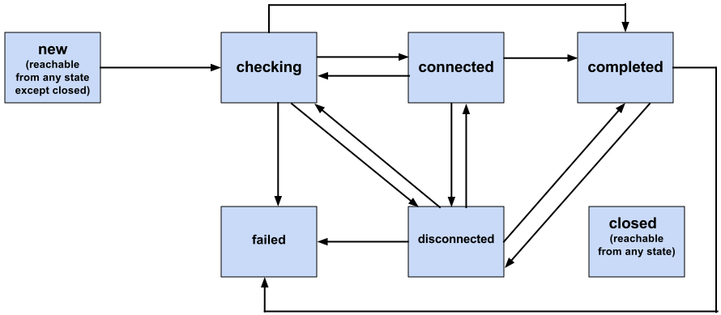

最大的浪费是经验的浪费
Posted on Fri 21 May 2021 in Journal
Thinking
在"得到"上听到一句话 - “企业最大的浪费是经验的浪费”，深以为然。中外都有这样的企业，蔑视企业成功所走过的成功之路，抛弃既往的经验和文化，结果造成了极大的人力和财力的浪费。
软件行业的特点是随着时间的流逝，产品上叠加了众多的功能，复杂性大大提高，维护成本也随之急剧上升，到达了一个点之后，维护老的产品已经不划算了，开发新产品是理所当然的。
有所谓的奶牛原则：“奶牛逐渐衰老，最终无奶可挤，然而与此同时，饲养成本却在上升”
但是，这就是考验智慧的时候了，不是只需要买头新奶牛就行了的，还需要良种奶牛的基因，良好的饲养场，有经验的工人和科学的饲养方法。
老产品成功的经验不能丢弃，用户喜欢的那些亮点不能丢弃，吃过的亏不能白吃, 踩过的坑不能再踩一回，那些发现并修复的 bug 都是宝贵的财富，成功地设计和开发一款新的产品必须要继往开来，推陈出新并不意味着把犯过的错误再犯一遍。
Quote
The Principles Underpining Devops - Gene Kim
- System Thinking 系统思考
- Amplify Feedback Loop 强化反馈环
- Culture of continual Experimentation And Learning 持续尝试和学习的文化
OODA: 4 innovation steps - Adrian Cockcroft from Netflix
- Observe: 观察现状以发现潜在的创新点
- Orient: 通过分析测量数据以理解之前观察到的现象的背后原因
- Decide: 推动，开发和执行一个项目计划
- Act: 实验和测试解决方案并将其部署到生产环境
Program
WebRTC 的 ICE state 有以下五种

enum RTCIceTransportState {
"new",
"checking",
"connected",
"completed",
"disconnected",
"failed",
"closed"
};
Q. ICE connection state 变为 disconnected 怎么处理?
A. The ICE Agent has determined that connectivity is currently lost for this RTCIceTransport. This is a transient state that may trigger intermittently (and resolve itself without action) on a flaky network. The way this state is determined is implementation dependent.
Examples include:
- Losing the network interface for the connection in use.
- Repeatedly failing to receive a response to STUN requests.
Alternatively, the RTCIceTransport has finished checking all existing candidates pairs and not found a connection (or consent checks [RFC7675] once successful, have now failed), but it is still gathering and/or waiting for additional remote candidates.
一言以蔽之，这种连通性检查在不稳定的网络中可能是间歇性的，可自恢复的，让子弹飞一会儿，如果在传输通道上没有数据传输，很长时间没办法恢复为连接状态，才需要 restart
Words
- (Not a) spring chicken 老大不小；不再年轻
- All fur coat and no knickers/ˈnɪkərz/ 华而不实
- Beauty is only skin deep 美貌是肤浅的，美貌不过一张皮
- Clean up nicely 打扮的很漂亮
- Dead ringer/ˈrɪŋər/ 相像之人；相像之物
- Don’t judge a book by its cover 勿只凭外表判断；不能以貌取人
- Knockout/ˈnɑːkaʊt/ 引人注目（或给人留下深刻印象）的人（或物）
- Put one’s face on 化妆
- All dressed up and nowhere to go 打扮整齐却无处可去